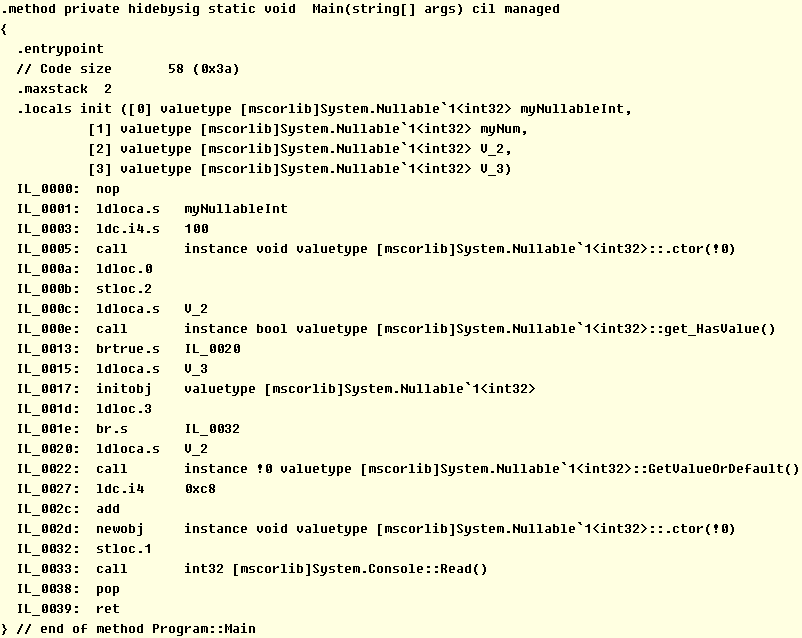

一、可空类型（Nullable Type）表示在值类型的正常取值范围内再加上一个null值，声明一个可空类型的标准语句如下：
T? myNullableNum = rangedNum/new T?() or null; //其中T需要为值类型例如，声明一个可空整数类型并赋值为null：
int? myNullableInt = null; //或使用为new int?()1.可空类型是泛型结构Nullable<T>的实例，其声明为：public struct Nullable<T> where T : struct，语法T?是Nullable<T>的简写形式，这两种形式是等效的：
Nullable<int> myNullableInt = new Nullable<int>();※根据声明可以看出，其基础类型T可以是包括struct和enum在内的任何值类型，不能是引用类型，也不能是可空类型，即可空类型不能嵌套使用；可空类型依然是值类型，且为结构类型；
※直接将普通类型或null赋值给可空类型是隐式转换的结果；
二、可空类型包含以下实例成员：
1.HasValue：只读属性，判断是否有值，如果当前值非空，返回true，否则返回false
2.Value：只读属性，如果当前值非空，可以正常访问，否则说明Value不包含有意义的值，此时访问Value时会抛出异常InvalidOperationException
3.GetValueOrDefault()：实例方法，如果当前值非空（HasValue为true），返回Vlaue的值，否则返回T类型的默认值（即私有字段value的默认值）
4.GetValueOrDefault (T defaultValue)：实例方法，如果当前值非空（HasValue为false），返回Vlaue的值，否则返回默认值defaultValue
三、如果将可空类型转换为其基础类型，需要使用强制转换或其Value属性获取：
int myInt = (int)myNullableInt;
int myInt = myNullableInt.Value;
//以上两种方式，在可空类型实例为null时会抛出异常，可以使用以下方式代替
int myInt = myNullableInt.GetValueOrDefault(); //其重载方法可以传入默认值
四、可空类型可以使用其基础类型中自定义的运算符重载和类型转换，如果操作数不包含null，则运算结果与其基础类型的运算结果一致，如果操作数包含null，则运算结果为null，在运算过程中，实际上是调用的可空类型的实例方法GetValueOrDefault()参与运算：
int? myNullableInt = 100;
int? myNum = myNullableInt + 200;
五、对可空类型使用比较运算符时，如果其中一个可空类型的值为null，而另一个为非null，则除!=（不等于）外，所有比较的计算结果均为false，所以并不是某个比较返回false，其相反的情况一定会返回true；
如果您觉得阅读本文对您有帮助，请点一下“推荐”按钮，您的认可是我写作的最大动力！
作者：Minotauros
出处：https://www.cnblogs.com/minotauros/
本文版权归作者和博客园共有，欢迎转载，但未经作者同意必须保留此段声明，且在文章页面明显位置给出原文连接，否则保留追究法律责任的权利。